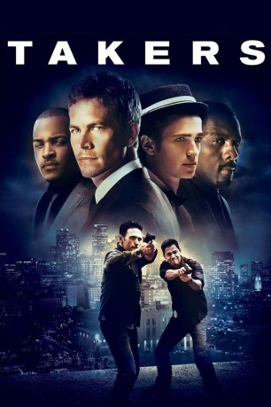

gesehen am 07.02.2016
gesehen am 07.02.2016Alternativ: Takers gesehen am 07.02.2016
 
 IMDB-Wertung: 6.2 / 10
IMDB-Wertung: 6.2 / 10  Metascore:
Metascore: 
Eine berüchtigte Bande von Kriminellen versetzt die Polizei immer wieder in Staunen, weil sie die perfekten Banküberfälle begeht. Sie kommen und gehen präzise wie auf Knopfdruck, hinterlassen keinerlei Spuren und verschwinden vor und nach ihren Raubzügen komplett von der Bildfläche. Doch als sie einen letzten Job durchziehen wollen, bei dem es um mehr Geld als jemals zuvor geht, durchkreuzt ein hartgesottener Detective ihre Pläne.
Jahr: 2010
Dauer: 107 Minuten
FSK: 16
Land: USA Studio: Screen GemsTonspuren: DTS - ,
Untertitel:
Auflösung: 1080p (1920x800) Größe: 9973 MB
Genre: Action, Thriller, Krimi
Regisseur: John Luessenhop
Drehbuch: Peter Allen, Gabriel Casseus, John Luessenhop, Avery Duff
Soundtrack: Paul Haslinger
Darsteller:
 Hayden Christensen als A.J.
Hayden Christensen als A.J. Matt Dillon als Jack Welles
Matt Dillon als Jack Welles Michael Ealy als Jake Attica
Michael Ealy als Jake Attica Idris Elba als Gordon Jennings
Idris Elba als Gordon Jennings T.I. als Ghost
T.I. als Ghost Jay Hernandez als Eddie Hatcher
Jay Hernandez als Eddie Hatcher Johnathon Schaech als Scott
Johnathon Schaech als Scott Paul Walker als John Rahway
Paul Walker als John Rahway Marianne Jean-Baptiste als Naomi
Marianne Jean-Baptiste als Naomi Gaius Charles als Max
Gaius Charles als Max Gideon Emery als Sergei
Gideon Emery als Sergei Zulay Henao als Monica
Zulay Henao als Monica Glynn Turman als Chief Detective Duncan
Glynn Turman als Chief Detective Duncan Nicholas Turturro als Franco Dalia
Nicholas Turturro als Franco Dalia Zoe Saldana als Lilli
Zoe Saldana als Lilli Tim Sitarz als Russian #1
Tim Sitarz als Russian #1 Danny Epper als Bank Guard #1
Danny Epper als Bank Guard #1 Andrew Fiscella als Security Chief
Andrew Fiscella als Security Chief Troy Brenna als Sweatpants
Troy Brenna als Sweatpants Roger Stoneburner als Wasted Junkie
Roger Stoneburner als Wasted Junkie Benito Martinez als Officer in Charge
Benito Martinez als Officer in Charge Roman Mitichyan als Russian #3
Roman Mitichyan als Russian #3 John Meier als Police Officer Jesse Chase #1
John Meier als Police Officer Jesse Chase #1 Mike Smith als Russian #5
Mike Smith als Russian #5Datei: X:\2010(N-Z)\Takers - The Final Job (2010, FSK16, 1920x800).mkv seit 06.02.2016
Festplatte: HD 2010(G-Z)-2011(A-F)
 Es gibt insgesamt 115 Filme in der Gruppe '2010(N-Z)'
Es gibt insgesamt 115 Filme in der Gruppe '2010(N-Z)'